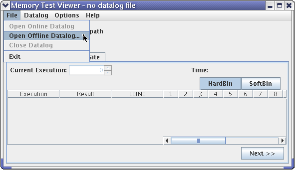
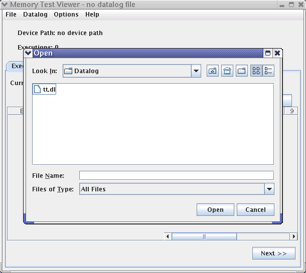
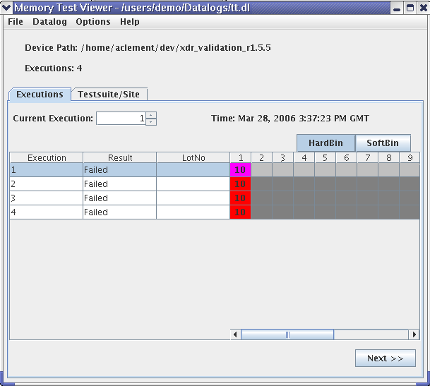
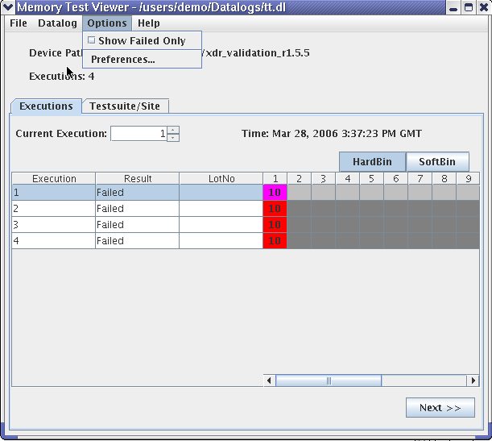

Selecting a data log file
To view test result data you must select a specific data log file.
- Choose :

A standard file selection dialog (Open dialog) appears.

If SmarTest is running you may can also choose (without the ellipsis ...). Then the currently active data log is used and reconstruction results are written into that data log. The title of the Viewer window is appended with "Online Datalog".
- Select the data log file of your choice.
- Click Open.
A progress bar window may appear while the data log file is loading. It may take some time but you can cancel the loading.
When the data log file is open, the file selection dialog window closes and the Viewer window comes back in focus.
In the Memory Test Viewer window shown below the following information is displayed above the tab area:
- Device Path: The path to the device associated with the selected data log file.
- Executions: The total number of test flow executions within the selected data log file for this device.
The information in the tabs area allows you to view and select data related to the triplet: site, execution number, and test suite. The numbered columns on the right represent test site numbers. The numbers in the site column cells are bin numbers and define the bin. Use the scroll bar to see more sites. In the example shown only one site was included in the selected test. See Executions tab for more details.

The tabs allow you to select different views and details on each execution step.
You can filter the executions shown in the execution tab area by choosing a command from the Options menu.

Choosing Show Failed Only limits the executions display to the ones which failed.